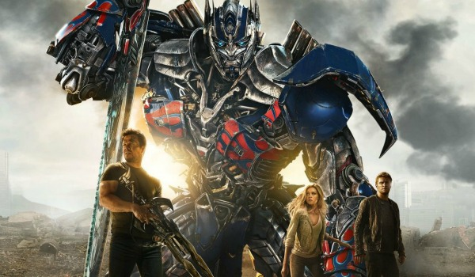
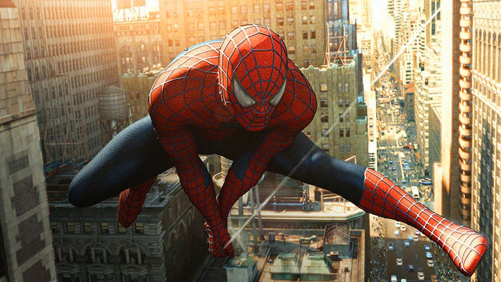
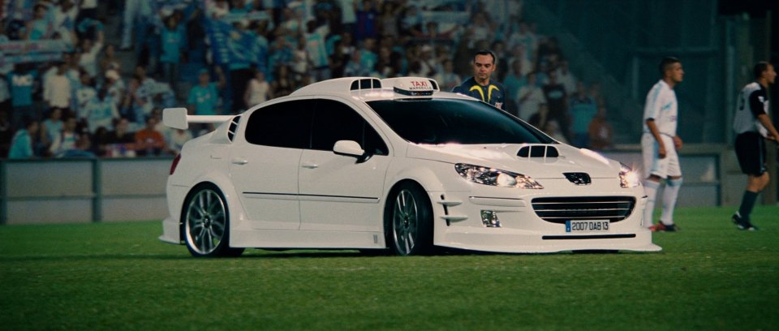

Harry potter:
- Genre: Adventure, Family, Fantasy, Mystery
- Release: 2011
- short description:
The group of Harry Potter, Ron and Hermione go back to Hogwarts to find and destroy the final Horcruxes of Voldemort. But Voldemort knows their mission, and the greatest magic battle in history takes place. Professor Dumbledore though lost from episode 6, but in the end he still plays an important role in leading the way for Harry to fight with the most powerful sorcerer.

Transformers
- Genre:action
- release: June 1 2007
- short description:
In the absence of Optimus Prime, a battle for survival has commenced between the human race and the Transformers. Cade Yeager forms an alliance with Bumblebee, an English lord, and an Oxford professor to learn why the Transformers keep coming back to Earth

Spiderman
- Genre: Action, Adventure, Animation
- Release: 2008
- short description:The animated television show that focuses on a 16-year-old Peter Parker and the origins of Spider-Man. Venom, Electro, Dr. Octopus, Sandman and Rhino just can't send him over the edge!

Taxi-4
- Genre: Action, Adventure, Drama
- Release: 2007
- short description:The story is beginning with a hyperactive Belgian criminal, "La Belge", undergoes extradition to trial in Africa, en route, he temporarily lands in the Marseilles police department for a few hours and bamboozles Emilien into believing that he';s actually a Belgian embassy employee railroaded by the real crook, who is now at large. Emilien foolishly buys the story and sets La Belge free, prompting an outrageous and explosive series of complications.

Home